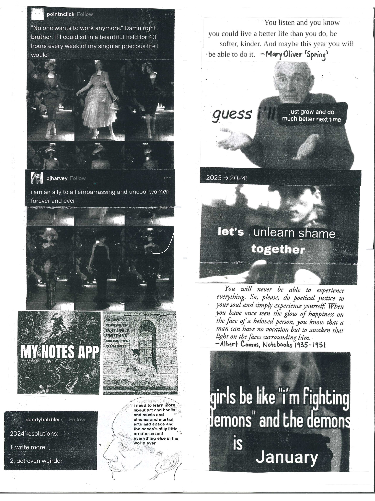

My current zine project is a perzine called Vagabunda y Bandolera. My favorite format is a one page quarter zine I love to make 'web-weaves' in zines. Web-weaving is when someone takes quotes, poetry, film stills, images or screenshots of anykind of physical and digital mediums that fit with a theme organized on one post sort of as a type of moodboard. These were really popular on tumblr and I really identify with them (see below). I also really like comics!
